| 0 |  |
rei |
A4 Acrylic |
Study dedicated homage to original art. From Highschool of the Dead. Personal copy available at postage and costs circa £5 or original for £40 |
| 1 |  |
hirano |
A4 Acrylic |
Study dedicated homage to original art. From Highschool of the Dead. Trying to learn to use Acrylic paint. Winter sessions with small digital photoframe to work from. Set of 5. |
| 2 |  |
stairwell |
A4 Acrylic |
Study dedicated homage to original art. From Highschool of the Dead. Personal copy available at postage and costs circa £5 or original for £40 |
| 3 | 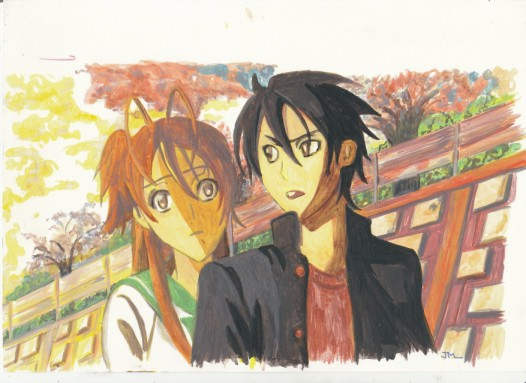 |
reiandkomoro |
A4 Acrylic |
Study dedicated homage to original art. From Highschool of the Dead. Personal copy available at postage and costs circa £5 or original for £40 |
| 4 |  |
airdrop |
A4 Watercolour |
Gran Paradiso ridge from Villeneuve climbs straight up to an impressive nothingness. |
| 5 |  |
canaille |
A4 Watercolour 2017 |
View from Cassis bluff on holiday |
| 6 | 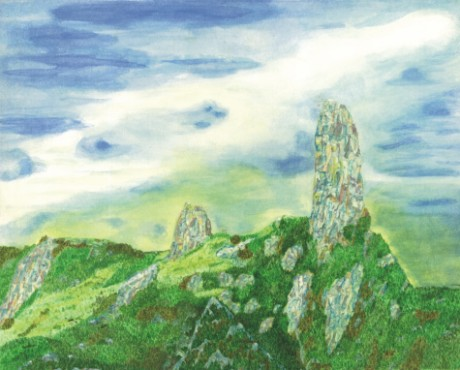 |
brazil |
50cm x 40cm Large Watercolour 2004 (S)Big file (C)3 |
I envisaged a wilderness of trees to remote distinctive peaks and the country most similar to the unknown with such a size gave it the name |
| 7 |  |
cannes |
A4 Watercolour 2017 |
Destination campsite in the town of the same name by bike cycle from Milan. |
| 8 |  |
chippingandcracking |
50cm by 36cm Large Watercolour 2007 (S)Art Box (C)2 |
Paulie and Beth descend the plateau 'kind of thing' but quite big cliffs |
| 9 | 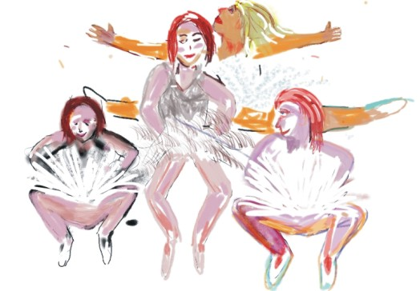 |
cygnets |
A4 Medium forgotten |
Girls just want to have fun. Taboo for the low status to represent but in the same vein we see more than you with less face |
| 10 |  |
field |
A4 Watercolour 2017 |
From the busy destination year bike tour to Cannes |
| 11 |  |
kinnanamor |
60cm x 45cm Large Acrylic (S)Hall |
A very old idea that worked in half an hour but took a long time to reproduce again once any detail of the mist was focused on. |
| 12 | 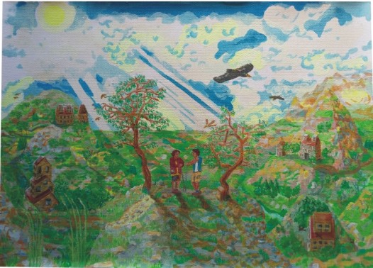 | meetingpath | 41cm by 30cm Large Acrylic | When I wasn't managing the style or scene I concentrated on the theme and feel I got what I wanted. Hill country and living. |
| 13 | 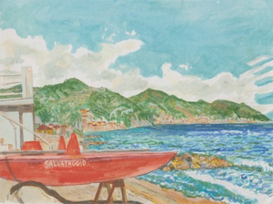 |
laigueglia |
A4 Watercolour 2017 |
Both ways visited dream (Well actually real but delightful) town in large sandy bay |
| 14 | 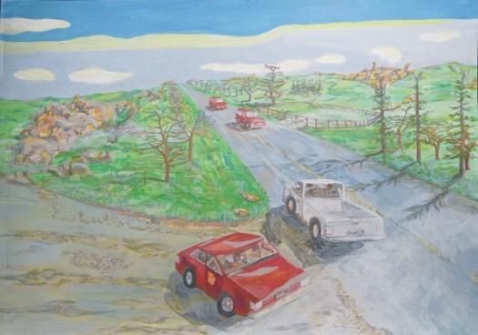 |
openjunction |
42cm x 30cm Watercolour |
Theme of open road and perspective requires more open than desired but also I need to work on the vehicles |
| 15 | 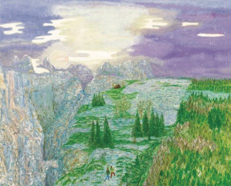 |
raneshut |
50cm x 40cm Watercolour 2009 (S)Big file (C)2 |
This is fantasy and the characters are too in their splendid wilderness getaway with somehow a hut as is common and great to find in the mountains there for the walkers and climbers |
| 16 | 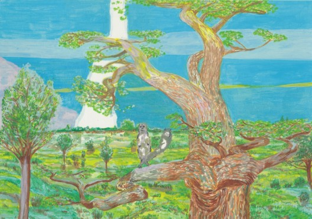 |
startledsquirrel |
A4 watercolour heavy |
Imagine you are the squirrel, it is how you see the night, the beautiful bounteous nature |
| 17 | 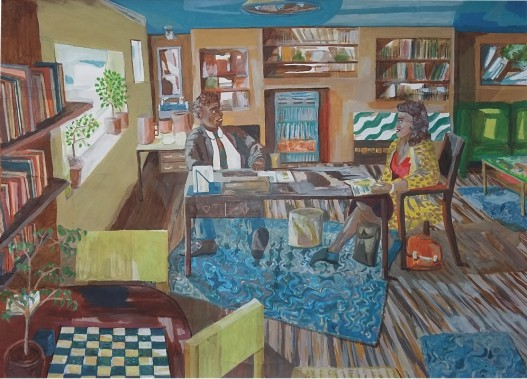 |
stellamarz |
52cm by 38cm Large Acrylic (S)Big file |
From RNPattersons Dark Lady, the office of Arthur Bright imagined by the River Hudson |
| 18 | 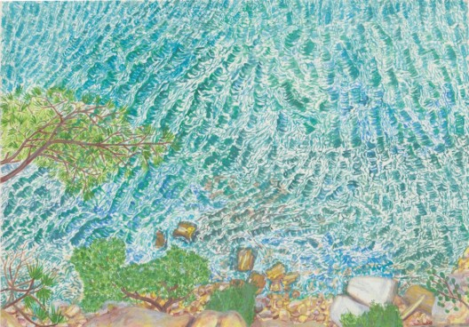 |
thecastle |
A4 watercolour 2017 |
View to the sea at Cassis |
| 19 | 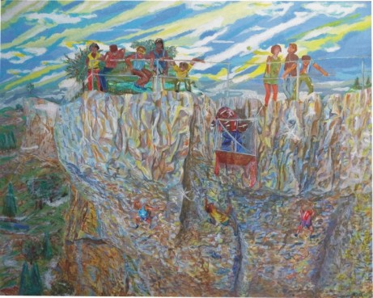 |
theduel |
50cm x 40cm Large Acrylic (S)Hall |
Imagined more futurist and black and white but hard to work out how to share the imagery so went for theme rather than pace |
| 20 | 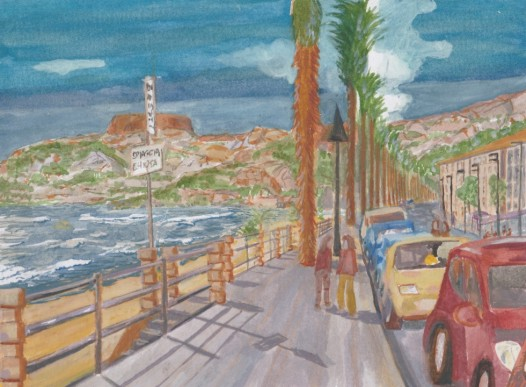 |
ventimiglia |
A4 watercolour 2017 |
Not how I remembered it when I caught the train here in 1999 but part of the long Mediterranean coast all the same where any picture is a good memory to attempt. Migrant scene too on a vast scale this time but Italy was the first country from the East also in 1999 in a way too. |
| 21 | 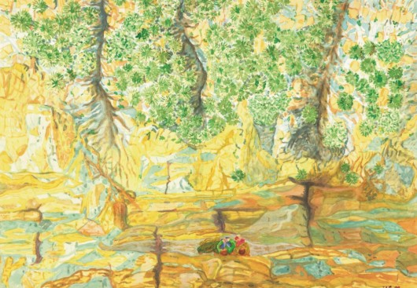 |
villeneuve |
50cm by 36cm Large Watercolour (S)Artbox (C)2 + prints well smaller |
Also a very large cliff I encountered several times walking back to Villeneuve, not quite this one I admit but it took the breath away |
| 22 | 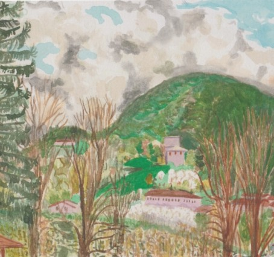 |
voltaggio |
A4 Watercolour 2017 |
Again live in passing as the steep terrain buried me inland on the journey to and from Cannes |
| 23 | 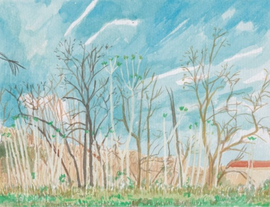 |
wierdtrees |
A4 Watercolour |
Like giant stalks, whitish in the glaring day and in charge of where they were. A hot break and a sketch necessarily in colour |
| 24 | 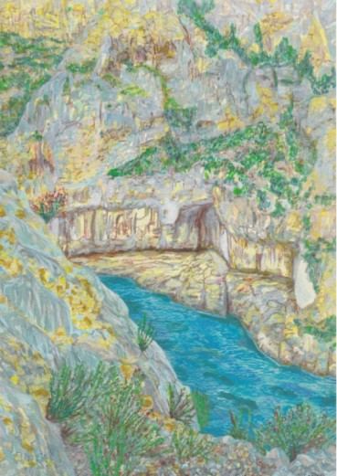 |
envau |
A4 watercolour |
you wish you were better when faced with non stop landscape inspiration like this but at least on that basis you take it away better in your mind for trying some |
| 25 | 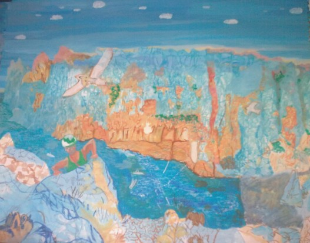 |
envauposter |
larger watercolour |
This was an effort to use light and slight magic realism for the same scene but entirely from home |
| 26 | 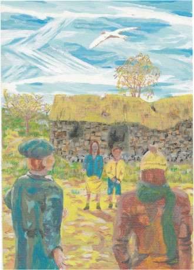 |
marybean |
A4 Acrylic |
Narrator meets children and they are briefly engaged in the possibilities of the Mary Bean. |
| 27 | 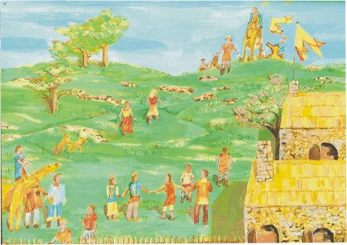 |
thekingreturns |
42cm by 30cm Acrylic (S)artbox |
The captivating folk tales of old kings of Ireland and a sort of king lear setting (youngest daughter of 3) worked out as a fairy tale |
| 28 | 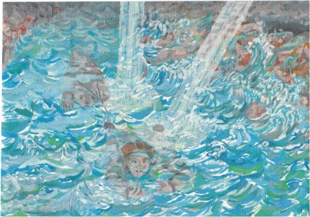 | tadthetooth |
A4 Acrylic |
How tad got away from his own trap but difficult to represent a tooth really so working on the stasis as he is stuck with a seal holding his exit from the sea cave |
| 29 | 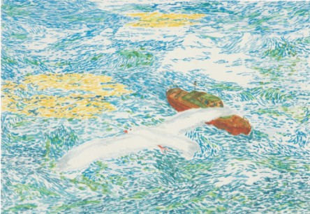 |
albacross |
A4 watercolour 2000 |
Working on sea patterns as I was in fact working on many things as travels and an ambitious path came to a staggered stop. Renamed from 'Lucky Day' and with this contemplation perhaps you cannot un-name meeting an albatross, yet why not really to now I feel there is stories and tales and options. |
| 30 | 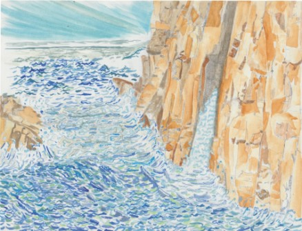 |
hebrideanshore |
A4 light watercolour |
On Pabbay, sitting on one of many corners that will bring you to the level of the sea. Birds, rocks, cliffs and green. 2002 |
| 31 | 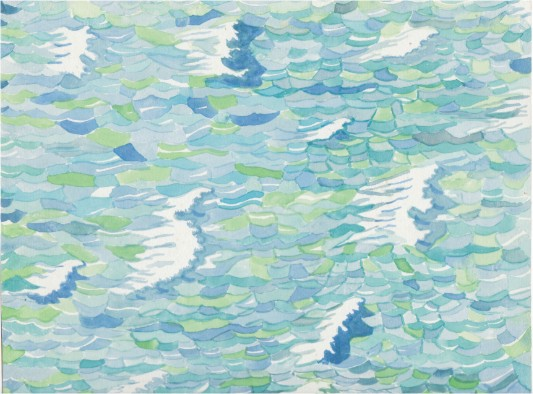 |
waves2 |
A4 watercolour circa 2004 |
second to make the eternal sea pattern work. Not as good as one but of course restrained by matching on all 4 sides in a small area. A long time before the Calanques trip of 2017 |
| 32 | 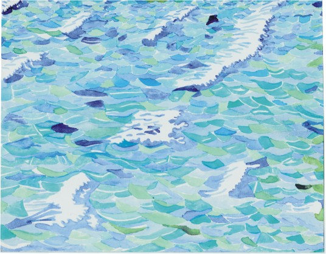 |
waves1 |
A4 watercolour |
Waves as patterns |
| 33 | 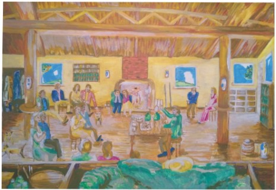 |
tailorstale |
42cm x 30cm Acrylic (S)artbox |
The bar scene is based on the bunk bed view from where perhaps you would get the feeling at least if I told you that a great storyteller is secreted away listening to a marvel missing from his array. |
| 34 | 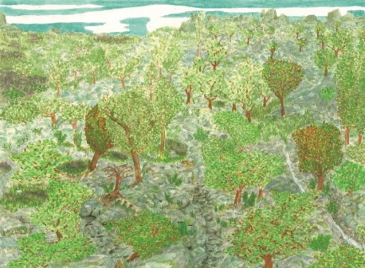 |
froggattdreaming |
A4 watercolour highly detailed |
much detail of a more open approach to the gritstone edge than really was there when I repeated the walk again. Space made by dreams perhaps |
| 35 | 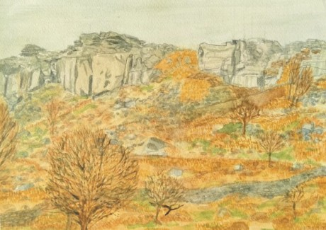 |
curbarautumn |
A4 watercolour landscape |
landscape painting but small |
| 36 | 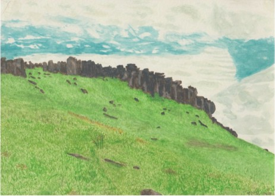 |
stanageskyline |
A4 watercolour landscape |
the skyline of the 2 mile long famous gritstone edge for the initial journey |
| 37 | 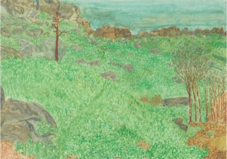 |
stanagegreen |
A4 watercolour landscape |
the vibrant green of the bracken growing over everything |
| 38 | 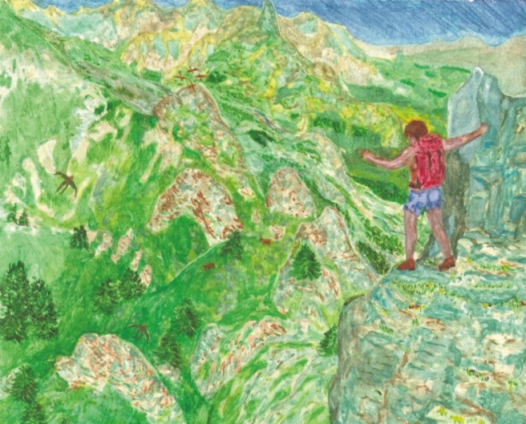 |
airdrop1000 |
A4 watercolour heavy (C)at least 1 and I have a good jpg location at atfth TT |
The blend of space, steepness and perspective including the character (me) looked better today and so I treat the schematic to a larger image than the other version |
| 39 | 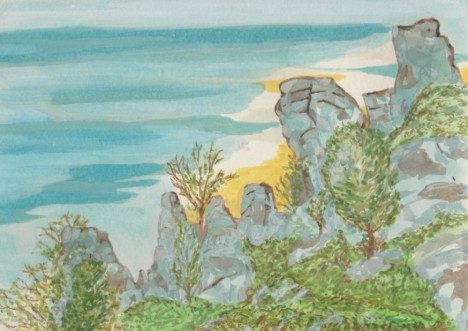 |
froggattsky |
A4 watercolour |
Those lovely crags are worth catching angles and landscapes and again I sat for this small one. Will I get a large one? |
| 40 | 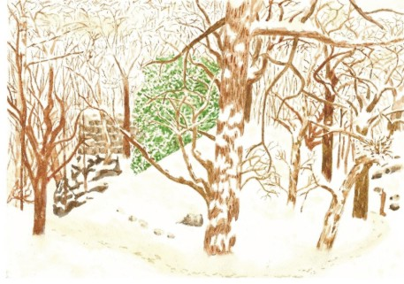 |
lotrfight |
A4 watercolour |
local walking from Clay Wheels Lane to the mystery of old plant still running and woods both ancient and developped a degree or two. This spot was live with sentiment and in the snow somehow though not usually for my time travel to swords and orcs and wickedly hard fighting |
| 41 | 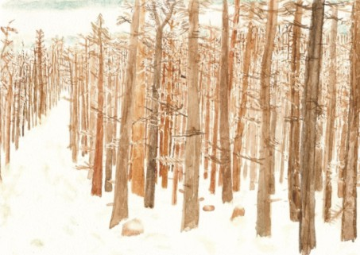 |
grenwood |
A4 watercolour |
larches in snow in managed Grenoside woods |
| 42 | 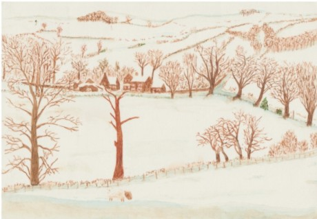 |
bentswhite |
A4 watercolour |
farmland edge of the city in winter |
| 43 | 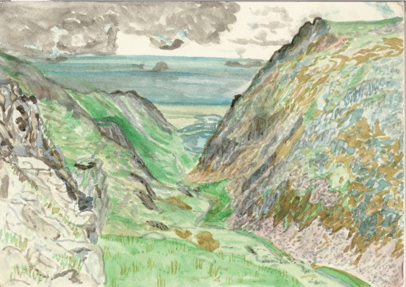 |
lookingberis |
A4 watercolour |
from the very top of the llanberis pass landscape small however and feels down there when on top in reality |
| 44 | 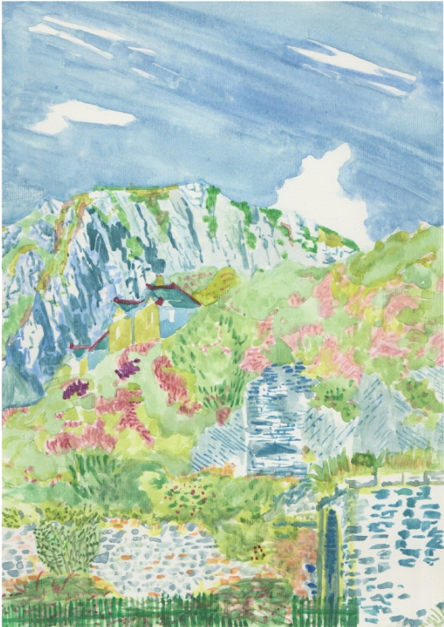 |
colwyn |
A4 watercolour |
bright colours at the junction between promenade, tunnel, cliffs and sky |
| 45 | 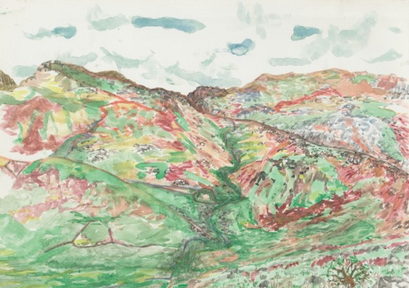 |
psmoorcolour |
A4 watercolour |
rusty moorland to mountain top colours from nant to pass make me want to pick up the stylo |
| 46 | 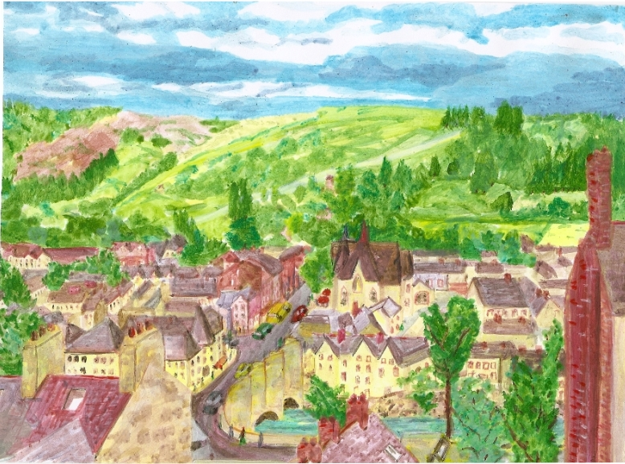 |
llangollen |
A4 acrylic |
taking liberties with the view when not producing wonders yet learning. This town I hope to pass through more on the important junction next south from the coastal A55 |
| 47 | 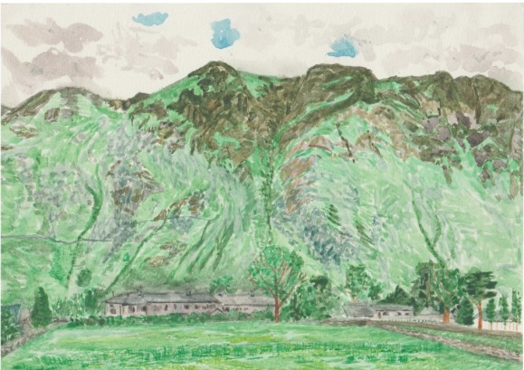 |
flank |
A4 watercolour |
has a bigger feel I hope can be seen as felt and worth a bigger picture already laid out |
| 48 | 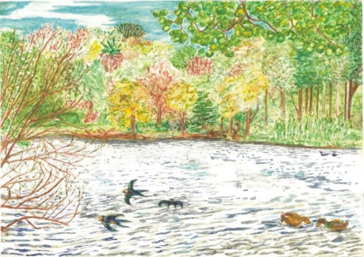 |
moorhallres |
A4 watercolour (S)gift (C)2 |
A lovely walk can be kept in mind or attempted to be drawn. Several visits here always to a different view of size of water or banks or feeling than expected. Perhaps hence making the picture in order to give away but the copies show it needs some work still. Second visit as good however so a theme maybe |
| 49 | 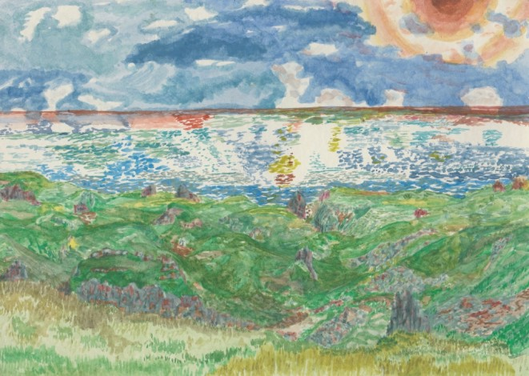 |
stabb |
A4 watercolour. see stabbird for acrylic version with bird |
memorable for the vastness, what the french call from the large I needed some colour as really it is sensory and hard to paint, not landscape but memory and interpretation anyway. St Abbs Head kinda area where I planted trees one very cold day |
| 50 | 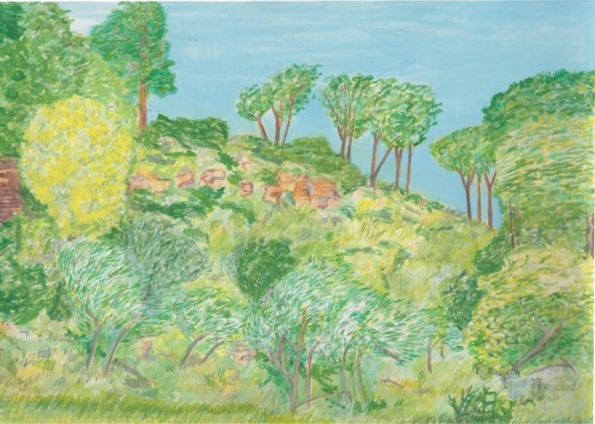 |
tweedbreeze |
A4 watercolour small landscape |
the movement of the trees is accompanied also by that of long lushish grass and was not so cold at all to sit and paint |
| 51 | 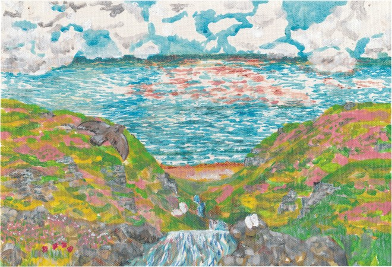 |
stabbird |
A4 acrylic |
the aim to get brightness out of light on moorland, a focus is here in the lay of the image and the clouds I think. Maybe the bird needs lifting |
| 52 | 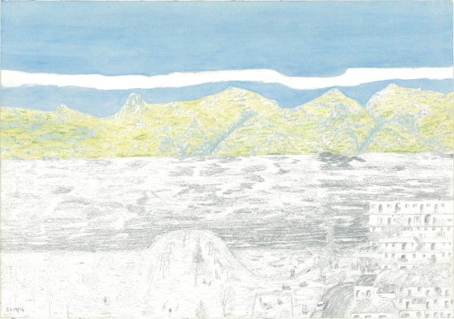 |
eastshore |
Watercolour and pencil Large 76cm x 62cm framed 2004 (S)wall (C)4 53cm by 38cm |
Lake Garda memories of a stop on the return to the next part of my life and the world too. Today I found dated a picture just b4 9/11 with the stories begun of my memories which made me happy to know they started as a plan much earlier and earlier than that event of global notice |
| 53 | 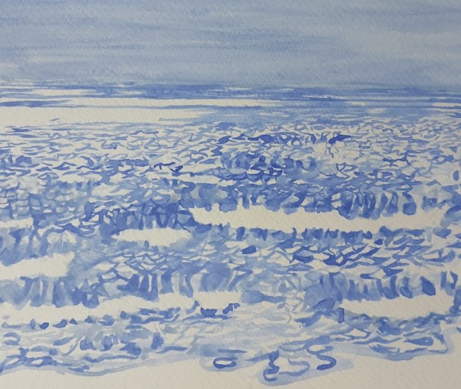 |
wavesmove |
A4 watercolour |
In the airbnb I caught up with my work, so tired when I returned I am not sure what hit me in Japan despite the logical succession of completed and happy days. Waves theme was back in pictures because I saw the pacific. This was probably begun there, maybe even completed there tbh, not sure |
| 54 | 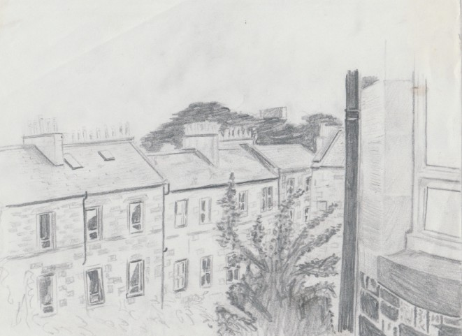 |
buccleugh |
A4 pencil 2000 |
the charming Georgian is it houses of this area near the meadows where I had a small room and a tucked in look out to the street. Grand just by the elegance of the tall ceiling and large stone block respectfulness |
| 55 | 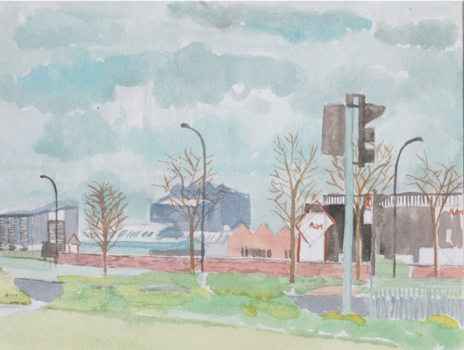 |
neepsend |
A4 bit smaller watercolour |
the big space feeling of the Don valley draws me to capture how industrial buildings were laid away from the road here |
| 56 | 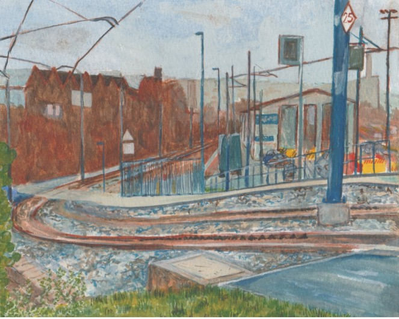 |
stagecoach |
A4 ish bit smaller Watercolour |
I could not get the view as from the window with height of the Don valley towards Hillsborough but found it quite a good scene the actual yards, rails are a bit wonky |
| 57 | 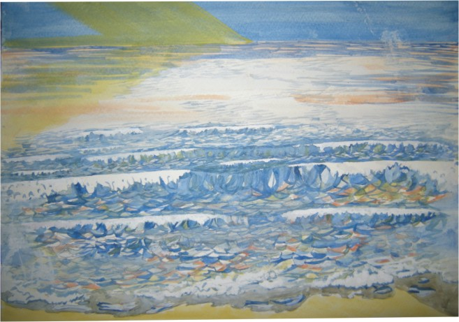 |
wavesincoming |
A4 watercolour |
from patterns to feelings I try to catch movement in the sea and different light as a realistic memory |
| 58 | 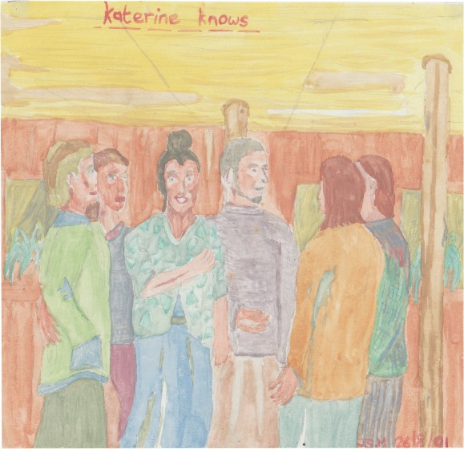 |
katerineknows |
watercolour 22cm by 21cm 2001 |
my village, their characters, the birth of an art story from the amazing mountains of Val d'Aosta |
| 59 | |
konstantpermeke |
colour pens 41cm by 26cm |
study of this historical work made originally in 1922 called 'over permeke' so interesting in the use of light to make 2 colours work as if they are more |
| 60 | |
hummingbird |
digital tablet unknown software but not an art program |
hummingbird by Moira Connel I always recall but the mention they get in Louis de Bernieres novel and some lifelike resemblences |
| 61 | |
thelook |
Large Acrylic 43cm by 28cm |
from Starship Troopers the first one, Diz looks at her beau with his. Crazy satire on war sublimation |
| 62 | |
reedstyle |
Pencil 32cm by 25cm |
moody me, few colours and blending shapes but that is what I wanted to draw. Much the reason photographers can do stuff quickly that artists lend to making an effort to find alternative material on the whole I think. Actually reference photo was in the John Hedgecoe book on photography around in my teens |
| 63 | |
seals |
pencil joined pages |
I drew seals on the walls at my workplace. It worked when I was popular but the same does not go when the library policemen come after you. I love seals from that time when I learned of Selkies and met them numerous times. This would be the reference drawing for the mural on the wall I think, used again in a few rentals |
| 64 | |
sealsatplay |
A4 pencil |
photo references from Scottish Wildlife Trust brochure when living in Ullapool near seals in 1997 or 98 |
| 65 | |
wolff |
A4 pencil |
again reference to the story of the old king Conn in People of the Sea by David Thompson in Canongate Classics |
| 66 | |
belledbien |
Acrylic 27cm by 19cm | my representation of the looks by a very creepy man at our own heroine Vanessa Van Helsing as she sleeps at the start of the amazing Netflix series |
| 67 | |
dinodina |
A4 pencil |
Character based impression of rugged walking country where I saw this gorgeous slope falling away that the protagonists set off down and fantastically like them imagined it to be much larger and longer than it really would have been |
| 68 | |
axethesitters |
A4 Acrylic |
referencing Axel and Scarlett leaving their unsuited lodging to the fangs of the sisterhood, longtime seriously wicked beings |
| 69 | |
saunter |
A4 watercolour |
Stanage End located wonderful stiff 2 crux HVS/E1 which on 2nd vist to paint in fact was not the same route for sure. Well who can be sure but I set off to paint like I set off to climb, to the finish |
| 70 | |
swalline |
A4 prints |
A4 stained glass type gel on perspex now lost and only A4 images remain |
| 71 | |
couplewalk |
Acrylic small like a card |
2 characters come into view with the sea as a background from an ascent wide grassy gully feature |
| 72 | |
gtweed |
watercolour card size or ... |
inspired to get animals and this horse movement I ensure here there is a lively clash of colours to make a scene |
| 73 | |
jay |
Acrylic 29cm x 19cm |
Jay looks into the steaming night of the forbidden zone from her super police bike. You don't see her love, her truth |
| 74 | |
letsdance |
A4 Acrylic |
valentine and such alternatives as there are to life in the moment here with glasses lifting themselves of the table just for starters as you try to see the look in your love's eyes |
| 75 | |
saeko |
A4 Acrylic |
the smoother Acrylic paper than than plastic canvas but belief took a while and this set looks like watercolour now so I must have been looking at very absorbent paper. Kneehow doitashimashite |
| 76 | |
idfy |
A4 Acrylic |
a fairy with a rose and a tipple, a thought carried through all this |
| 77 | |
jaygallery |
A4 Acrylic |
Jay fanart representation in the opening scenes of the Anime Sky Blue |
| 78 | |
froggattdetail | A4 fine details pencil 2005 |
A working of a theme to draw both crags and imagination from my brief office spell in Valley Road |
| 79 | |
chainsnow | A4 Acrylic |
from my mothers excellent photo of the chain bridge in winter where the foreground snowflake is a scene maker. For reference and record more than to improve or copy overly well |
| 80 | |
climbsounds | 42cm x 30cm Acrylic circa 2018 |
Fine acrylic paper, smooth grained is much better but the process of getting rock is still variably slow for me. Stanage here |
| 81 | |
rosedev | 20cm by 17cm Acrylic |
devart tuition idea followed by 1000's of us |
| 82 | |
climbperuse | A4 watercolour |
Froggatt edge sitting picture in a ambient spot to catch the atmosphere |
| 83 | |
congocorner | A4 watercolour |
the best HVS (stanage edge), 2 cruxes and tbh dangerous if you cannot do it |
| 84 | |
skyelandview | 31cm by 22cm pastel 1999 |
from the local brochure practicing |
| 85 | |
froggattdreaming2 | A4 watercolour |
lighter wider higher and less tight detail but so much detail otherwise in the the version 1. This walk goes on and on and did happen again and again to initiate the process |
| 86 | |
movingdepth | A4 watercolour |
froggatt approach again with shadows now |
| 87 | |
waves5 |
31cm by 23cm watercolour |
patterns in the water repeat for each eye they are different but become the same. Art theory for landscape developping here begun with waves and villeneuve limestone |
| 88 | |
greenpie |
31cm by 23cm watercolour dec-01 |
getting my people ready for the plot, happy, party, relationships and love and music |
| 89 | |
bwapproach |
A4 pencil | half sketch and half cartoon prep |
| 90 | |
waterscape |
A4 watercolour |
the strong theme of repetition making water with competing directions here and the basic cliff shore like a cartoon style |
| 91 | |
limestoneframe |
felt tip original unsure what size | colour and and ravine bed themed limestone scenery to take you on a walk |
| 92 | |
waveridge |
A4 coloured pencil circa 1985 |
waves, mountains, mountains, waves. There is no ending to make up your mind if one could be representing an image of the other such is the force of momentum in even the most enduring features in nature. Find a pattern and it is a recollection |
| 93 | |
xwing |
25cm by 21cm Acrylic |
colour for want of storyline or nerve |
| 94 | |
morrehall |
25cm by 20cm circa 2017 |
another MoreHall, as interesting the dog in the medical chariot I saw and again hard to recall that first vision that drew me back here to catch it |
| 95 | |
gwells |
25cm by 20cm waterolour eponymous card |
actually a photo view conveniently captured from the kitchen window by my mind, not a camera. |
| 96 | |
candyridge |
A4 Acrylic |
the walking deserves the title and needs an effort, the umpteenth here to try and get this landscape half the justice of my memory and ability to do so. So far strictly only Villneuve really has done that to my feelings but divergence counts highly as a link to making another different picture so I am going to have to refer to this for the brightness is felt and feels suitable as a theme |
| 97 | |
broomrocks |
32cm by 24cm pencil landscape 1998 |
getting my fingers used to working outdoors. Is it cold, no, just impatience really. Loch Broom banks of early on the north shore |
| 98 | |
rewind |
32cm by 23cm early 2000 |
looking inside, knocked or surprised but a dream is information, a dive is seeking a dream |
| 99 | |
maneqbw |
A4 watercolour |
greek style maybe, classical |
| 100 | |
maneqblue |
A4 watercolour |
easy to lay different colours on the mannequin theme |
| 101 | |
maneqdark |
A4 watercolour |
all the shades go well based upon the complement of shape |
| 102 | |
maneqorange |
A4 watercolour |
the model pose and style is about being in good clothing |
| 103 | |
riverain |
A4 watercolour |
light colours and the not perfect car as usual but the image is why we paint, it is true to stir a lot of recollections otherwise not graced with recorded observation |
| 104 | |
cragincrop |
A4 pencil |
interest in the reference point like an arrangement |
| 105 | |
leopard |
A4 pencil circa 1983 |
from a photo and rather nice more than wild as many of us are in awe of the big cats as respected creatures rather than savages |